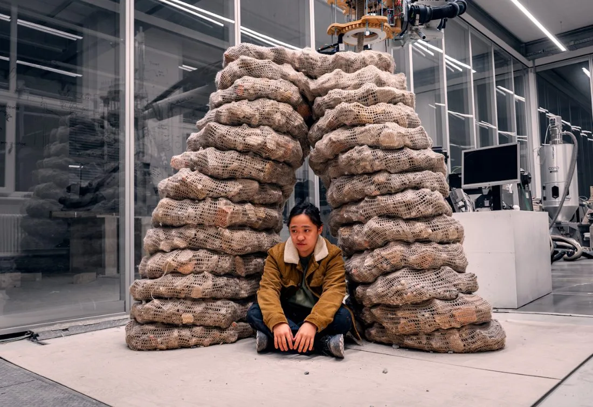
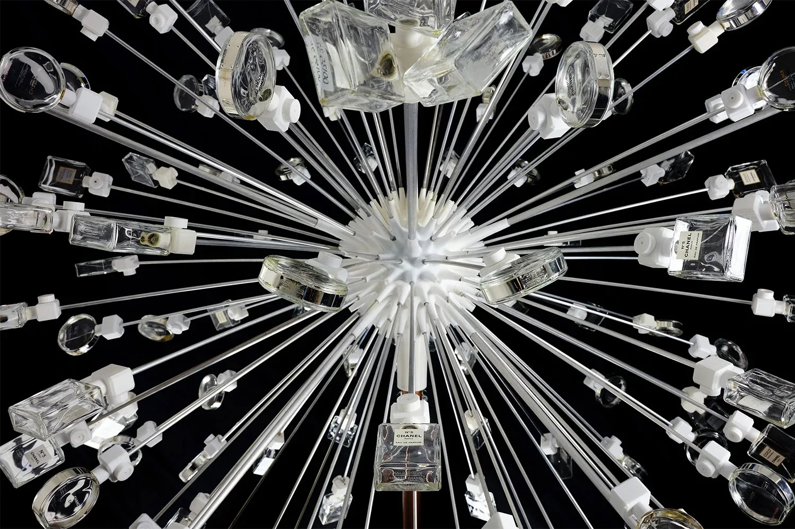

hello about
Kwang Kai Jiekaji
Research Associate, ITKE, University of Stuttgart. From Singapore, living in Stuttgart.
Computational designer specialising in connecting parametric modelling and digital techniques with physical craft. Experienced in turning scripts and simulations into real-world outputs across robotic fabrication, multi-axis CNC and additive manufacturing.
Comfortable designing processes and products: rapidly prototyping, debugging and iterating with new materials and toolchains to deliver precise, build-ready results across industry and research.

09 moments
timeline
- 2026
-
work May 2026 to present
Research Associate
ITKE, University of Stuttgart · staff page
- Research on natural fibre composites and vertical extension applications
-
paper 2026
Con(knit)uous Rubble: A Novel Additive Manufacturing Approach for Unprocessed Concrete Rubble
Kotrozou, A., Kwang, K.-J., et al. CAADRIA 2026 proceedings
-
award 2026
Best Paper Award
CAADRIA 2026, for Con(Knit)uous Rubble
- 2024
-
work Jan 2024 to Oct 2025
Research Assistant
University of Stuttgart (ICD/ITKE)
- Biomimicry braiding for load-bearing slender FRP node structures (ITKE)
- ArchiBioFoam: digital design and robotic fabrication of biofoams for adaptive mono-material architecture (ICD)
- Lights-Off On-Site Timber Construction (ICD)
- 2023
-
study 2023 to 2025
M.Sc. Integrative Technologies & Architectural Design Research (ITECH)
University of Stuttgart (ICD/ITKE)
- GPA 1.5
- 2021
-
work Dec 2021 to Aug 2023
Computational Designer / Timber CNC Machinist
Superstructure, Singapore
- Led bespoke interior and exterior installations from concept through fabrication to installation
- Furniture design and fabrication
- Carpentry and machining (timber tools, 3/5-axis CNC)
- Project management
-
award
International Architecture Awards
Wondrous Light Children's Home, with Superstructure
- 2019
-
work Apr 2019 to Aug 2020
Research Assistant
AirLab, SUTD, Singapore
- Programmed 6-axis robotic large-scale FDM (chandelier installed at DB Schenker Upcycling Lab)
- Ran FDM/SLA lab operations, assembly and install support, procurement and vendor coordination
- 2018
-
study 2018 to 2021
B.Sc. Architecture & Sustainable Design
Singapore University of Technology & Design
- Honours with Merit
- start
06 toolbox
skills
3D / parametric
Rhino 3D, Grasshopper (Karamba, Kangaroo)
Programming
Python, C#
Fabrication
6-axis ABB / KUKA robots, 3/5-axis CNC, FDM / SLA / clay printing, laser cutter, carpentry
Electronics
Arduino, Raspberry Pi, Jetson Orin Nano
Rendering
Unreal Engine, Enscape, Twinmotion, Lumion
2D
Photoshop, Illustrator, InDesign, Lightroom
want to make something together?
say hi